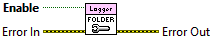

Error In describes error conditions that occur before this node runs. This input provides standard error in functionality.
Enables or disables organizing log files into a calendar-based heirarchy of sub-folders within the root folder based on the log file's creation date.
The calendar-based heirarchy is created for the default log file in the root folder as follows: YYYY->MM->DD, where YYYY is the year with century, MM is the month with leading zero, and DD is the day of the month with leading zero.
Regardless of this configuration, all log files use an ISO 8601 timestamp for the file name to avoid overwriting previous logs.

|
|
Error In describes error conditions that occur before this node runs. This input provides standard error in functionality. |
|
|
Enable determines if the log files are organized into a calendar-based folder heirarchy based on the creation date of the log file. |
|
|
Error Out contains error information. This output provides standard error out functionality. |